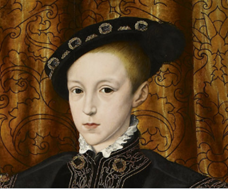

Timeline
1491: Born in Greenwich Palace, Kent, England on June 28th to King Henry VII and Elizabeth of York.
He was preceeded by his older brother Arthur, Prince of Wales (heir to the throne) in 1486, his older sister Margaret in 1489, and younger sister Mary in 1496.
1491 - 1501 - Early Childhood: He was given a well-rounded education fit for his royal status, and tutored in many subjects common to the time, including theology and astronomy, and was fluent in Latin and French, with a working knowledge of Italian.
1501: Older brother Arthur marries Princess Katherine of Aragon (daughter of the King and Queen of Spain) as pre-arranged by the couple's parents, for a political alliance.
1502: After less than 6 months of marriage, Arthur dies at 15 after getting sick. Henry, is now the heir to the throne.
Marries Katherine of Aragon and becomes King: 1509

Birth of first child: Mary - 1516

Birth of second child: Henry FitzRoy (illegitimate) - 1519

Starts affair with Anne Boleyn: 1526
Divorces Katherine of Aragon and marries Anne: 1533

Birth of third child: Elizabeth - 1533

Start of break with the Catholic Church and England becoming Protestant: 1533 - Act in Restraint of Appeals (to the Vatican)
Beheads Anne Boleyn for treason and marries Jane Seymour: 1536

Pilgramage of Grace: Failed religious uprising against Henry, aimed at restoring Catholicism in England - 1536 - 7
Birth of last child: Edward - 1537 - His mother Jane dies two weeks later from complications in child birth

Marriage and annulment of marriage to Anne of Cleves: 1540

Marriage to Catherine Howard: 1540

Execution of Catherine Howard for treason: 1542
Marriage to Katherine Parr: 1543

Seige and capture of Boulogne (town in France): 1544
Death and ascension of son Edward as King Edward VI: 1547